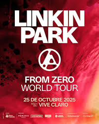
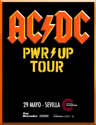
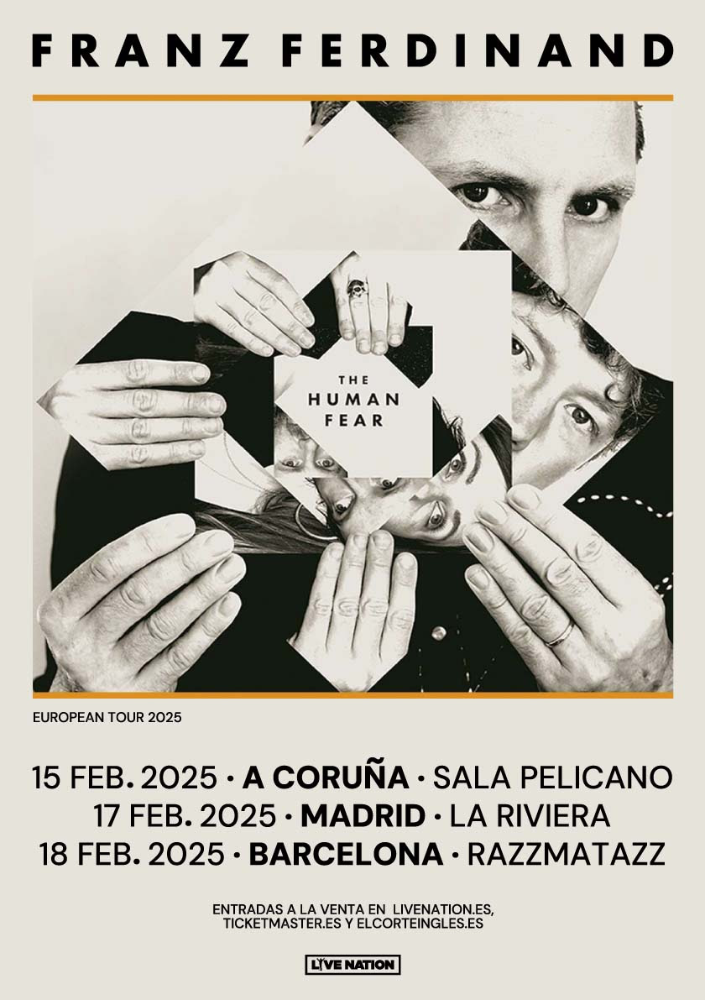
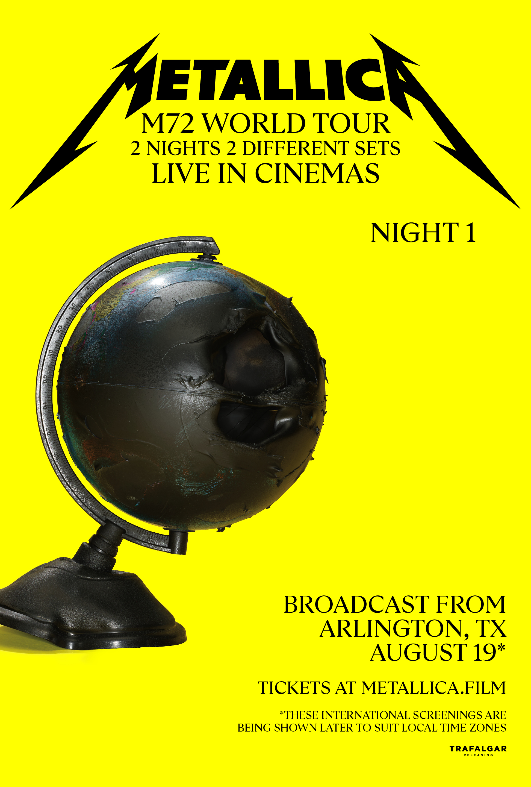
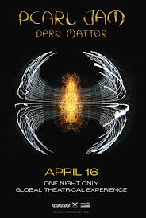

Descubre lo invisible.
Participa en lo irrepetible.
Registros del Archivo
Tour From Zero
Acto 1 - Inception: "Somewhere I Belong", "Crawling", "New Divide", "The Emptiness Machine".
Acto 2 - Creation: "The Catalyst", "Burn It Down", "Over Each Other", "Waiting for the End", "Castle of Glass", "Two Faced", "Empty Spaces", "When They Come for Me", "Remember the Name", "Casualty", "One Step Closer".
Acto 3 - Collapse: "Lost", "Good Things Go", "What I've Done".
Acto 4 - Kintsugi: "Overflow", "Numb", "In the End", "Faint".
Acto 5 - Kintsugi: "Papercut", "A Place for My Head", "Heavy Is the Crown", "Bleed It Out".
Tour Power Up
Acto 1: "If You Want Blood (You've Got It)", "Back in Black", "Demon Fire", "Shot Down in Flames", "Thunderstruck", "Have a Drink on Me", "Hells Bells", "Shot in the Dark", "Stiff Upper Lip", "Shoot to Thrill", "Sin City", "Rock 'n' Roll Train", "Dirty Deeds Done Dirt Cheap", "High Voltage", "Riff Raff", "You Shook Me All Night Long", "Highway to Hell", "Whole Lotta Rosie", "Let There Be Rock".
Encore: "T.N.T.", "For Those About to Rock (We Salute You)".
Tour Human Fear
Acto 1: "Audaz", "Doctor Doctor", "De vuelta al exterior", "Cada día", "Canción de amor a 140 bpm", "Soñador de cada día 4", "Curioso", "Riffs audaces 1 y 2", "Constrúyelo con Antoine y Pierre", "Bar solitario", "Every Day", "Pestañas negras", "Audacious", "Los pájaros", "Korg tonto".
Encore: "Billy, adiós"
Tour M72
Night One: "Orion", "For Whom the Bell Tolls", "Holier Than Thou", "King Nothing", "Lux Æterna", "Screaming Suicide", "Fade to Black", "Sleepwalk My Life Away", "Nothing Else Matters", "Sad but True", "The Day That Never Comes", "Ride the Lightning", "Battery", "Fuel", "Seek & Destroy", "Master of Puppets".
Night Two: "The Call of Ktulu", "Creeping Death", "Leper Messiah", "Until It Sleeps", "72 Seasons", "If Darkness Had a Son", "Welcome Home (Sanitarium)", "You Must Burn!", "The Unforgiven", "Wherever I May Roam", "Harvester of Sorrow", "Moth into Flame", "Fight Fire with Fire", "Whiskey in the Jar", "One" "Enter Sandman".
Tour Dark Matter
Act: "Given to Fly", "Nothing as It Seems", "Low Light", "Why Go", "Corduroy", "Elderly Woman Behind the Counter in a Small Town", "Scared of Fear", "React, Respond", "Wreckage", "Even Flow", "Hard to Imagine", "Dark Matter", "Won't Tell", "Upper Hand", "Jeremy", "Gimme Some Truth" (John Lennon cover), "Porch""Her Majesty", "Just Breathe", "Smile""Wasted Reprise", "Life Wasted", "Do the Evolution", "Setting Sun", "Alive", "Rockin' in the Free World" (Neil Young cover)